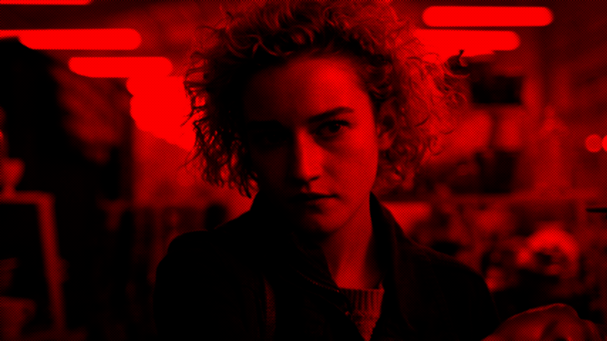
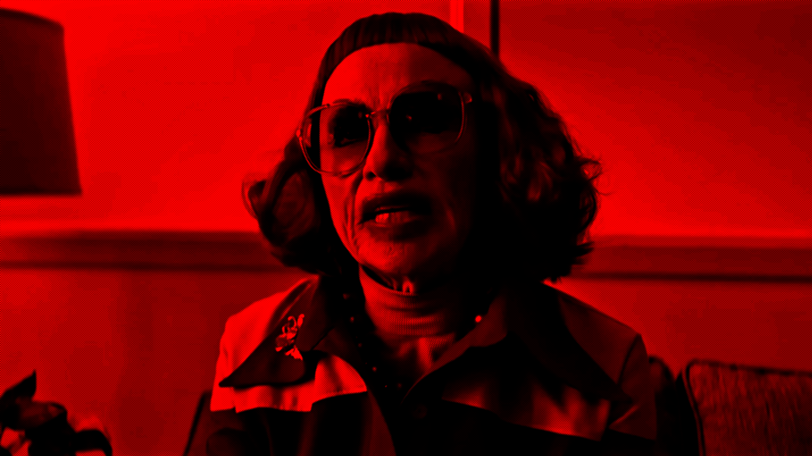
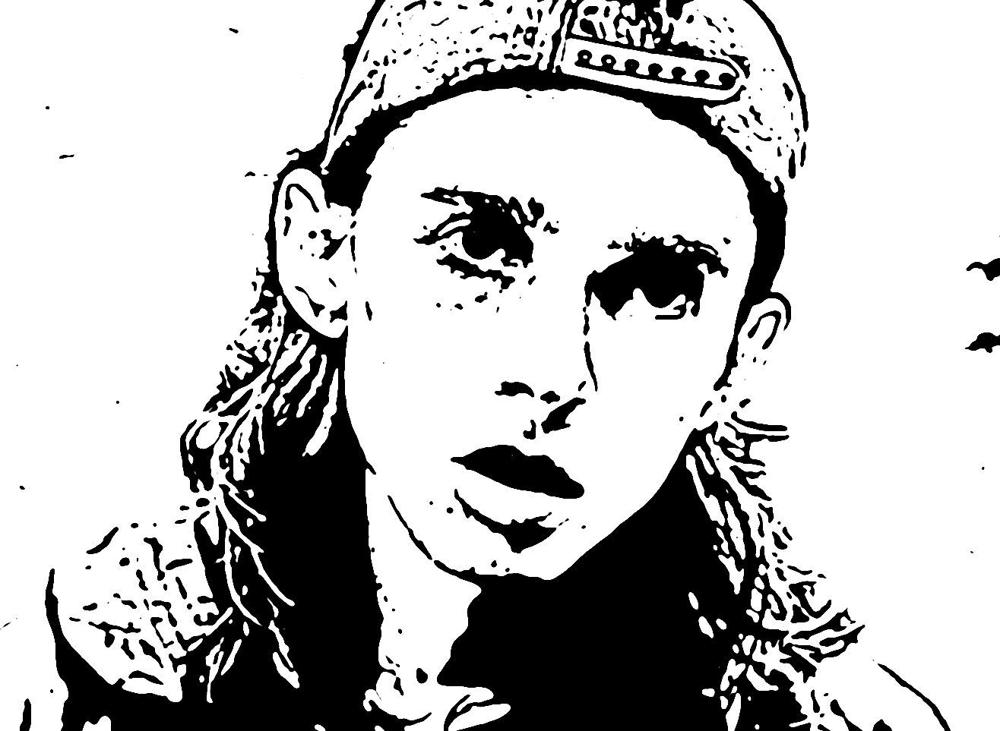

at first impressions, I presumed the film would exclude intense gore due to the victims being children; it felt too intense to portray a plot around harming children. Instead, the plot works to enlighten the viewer on the struggles they face from a system meant to protect them. During the writing process, Zach Cregger had lost a friend close to him. His grief created a stronger story dynamic by writing about the perspective everyone felt toward the disappearance of the children. All the different lives, the mix of emotions, and even characters who would often be overlooked. I personally found this story to be more comedic than terrifying although I enjoyed watching it.



In the film Aunt Glady's travels with a bag that reveals why all the students suddenly dissapeared. This a twist on a what's in my bag trend !